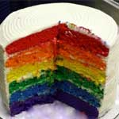
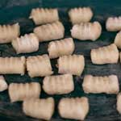

Food and Recipes
Return Home
|
|
|  |
Make A Rainbow Cake
I see this quite often on stumble upon, and while I know that it uses just classic vanilla cake I can't help but think it will actually taste better in color. Maybe I'll make it for my 22nd birthday? I mean uhm, 21st, yes I'll be 21 this year.
|
Make Gnocchi
When I was in Italy I was a gnocchi freak, I seriously couldn't get enough of it. I was so disppinted though when I came back and realized that gnocchi here sucks. So my next best option is to make it myself. The thing is though, it could either turn out awesome, or (more likely) it will be worse and I'll be doomed to eat sub-par gnocchi from the states for the rest of my life.
|
 |
|
|
Try Fresh Venison
I dated a girl from New Zealand once, and she told me the primary source of meat she ate was from her own backyard. I'm not kidding, this girl had a cow farm, that and her dad was like this crazy hunter and refused to eat store meat. She was suprised that I've never had fresh venison. So now it's on the list. |
|